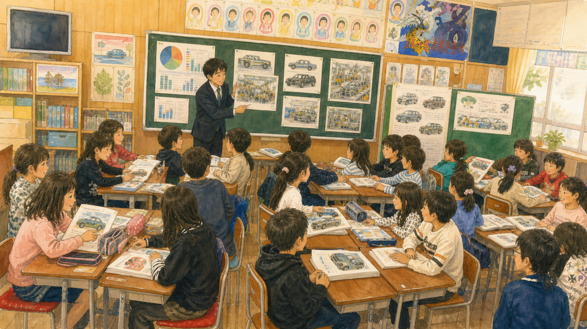
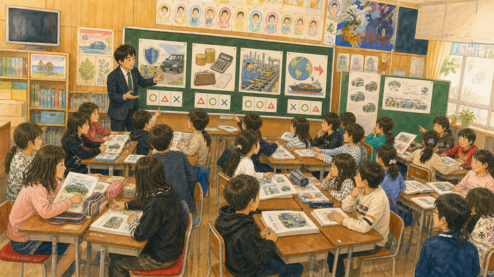
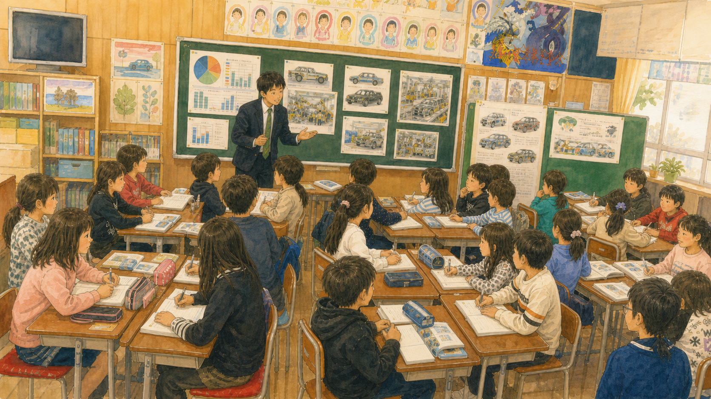
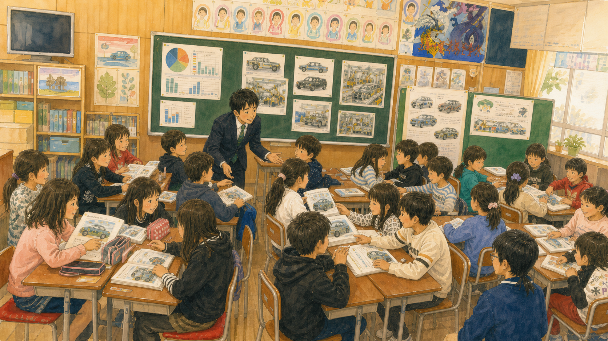
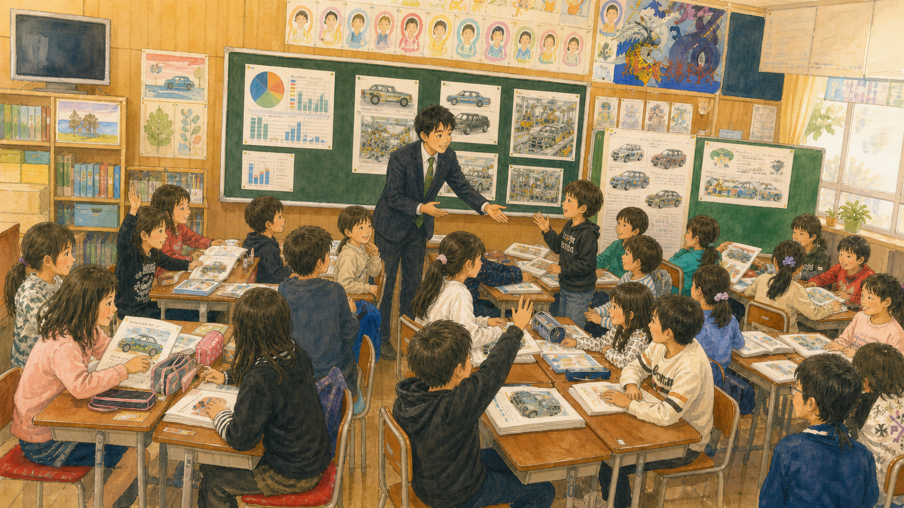
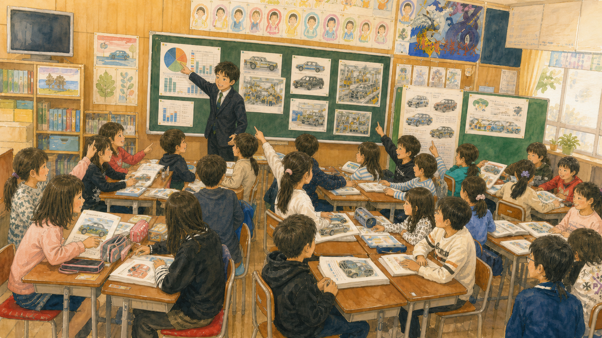
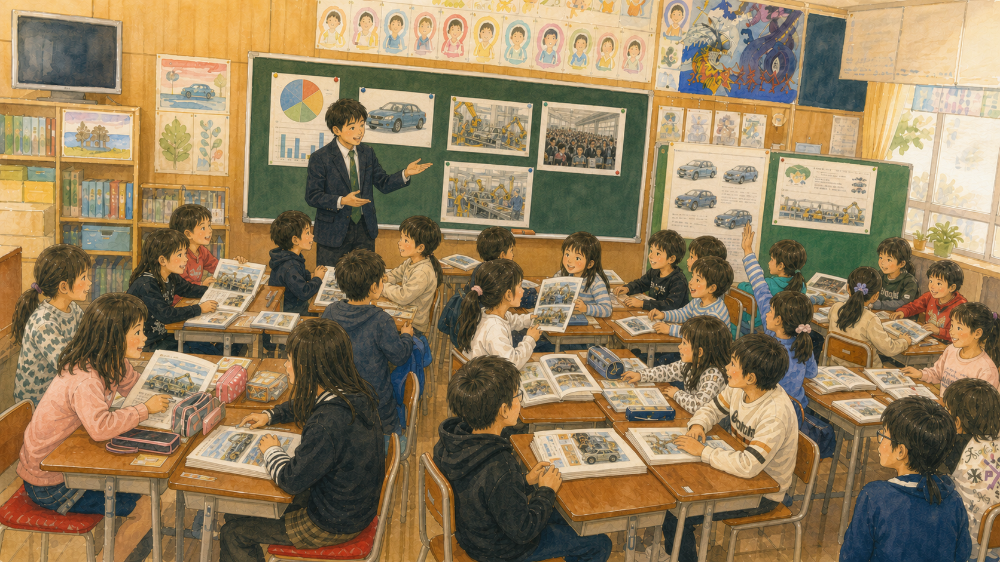
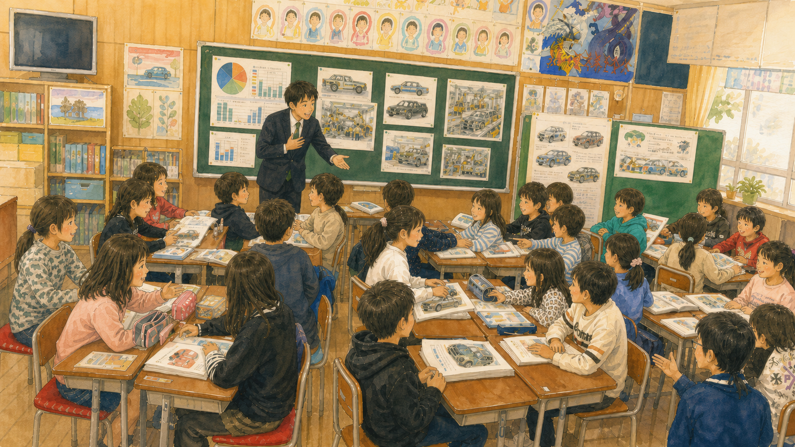
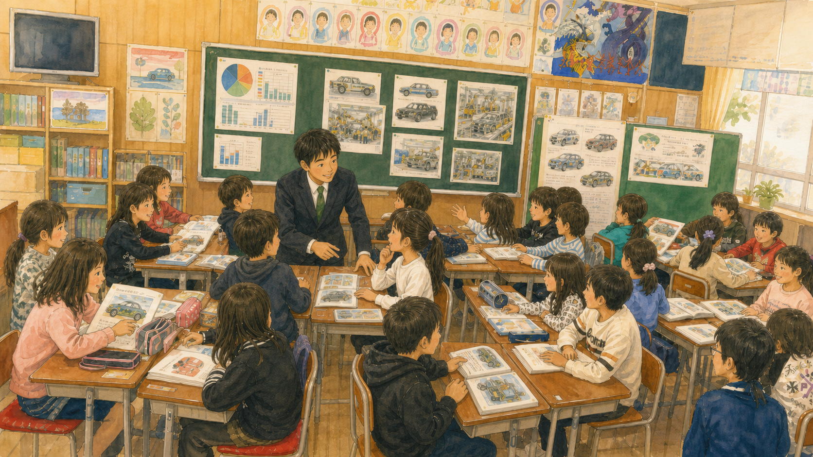
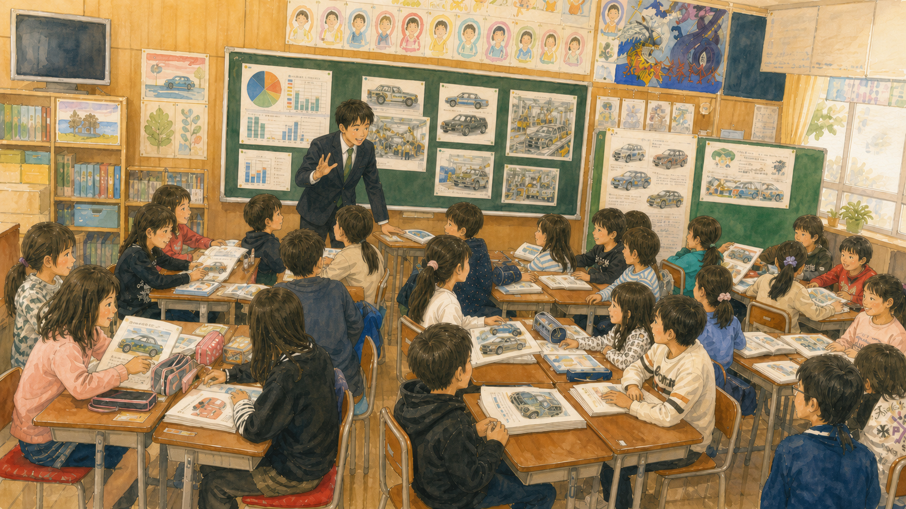

濱之鄉自動車產業：五年級社會課分析架構
• 協同學習：學生以筆記、追問與同儕觀點修正自己的理解。
• 伸展任務、權力流動、質性時間與三位一體對話，共同構成分析架構。

課堂的真實兩難
• 課程不追求單一正解，而是辨識不同立場各自的受益與受損。
• 人口減少圖表將產業議題延伸為下一堂課的探究問題。

一、傾聽關係與寧靜氛圍
• 發言者停頓時，全班以等待支持尚未成形的想法。
• 「你講得很有道理」顯示學生回應的是理解，而不是搶答。

二、協同學習與個人作業協同化
• 小組與全班交流不是分工找答案，而是串聯彼此的理由與證據。
• 協同學習的關鍵，在於學生能說出同伴如何改變了自己的思考。

三、伸展跳躍任務與社會科本質
• 學生必須同時考量工人家庭、企業存續與國家經濟。
• 社會科的學習由背誦產業知識，走向多重價值與因果關係的審議。
四、言談權力的流動與去中心化
• 教師記錄與轉引學生發言，使學生的想法成為公共討論資源。
• 言談的重心由教師判定，逐步移向同儕之間的追問與回應。

五、質性時間與深度學習
• 學生的驚訝與未竟感顯示，他們正在面對尚未能立即回答的問題。
• 教師以「大問號」保留思考，讓探究延伸到下一堂課。

六、與教材、他人、自己的三位一體對話
• 同儕家庭可能失業的處境，使抽象的產業議題具有真實的人際意義。
• 個人生命經驗被帶入討論，並轉化為可以共同探究的社會問題。

三項重要學習事實
• 產業外移的宏觀議題，被學生連結到同儕與自身家庭的經驗。
• 學生在安全、成本、技術與就業的衝突中發展多角度思辨。

教師團隊反思
• 圖像化或概念化紀錄可協助學生把兩難感受轉為可討論的關係。
• 團隊可持續思考如何讓心理安全與社會探究同時發生。

學習共同體課例探究與省思 - 專題討論 (11)
• 協同合作不是附加活動，而是伸展跳躍學習得以發生的條件。
• 教師的工作是建構可讓公共語言持續流動的學習關係。

學習共同體課例探究與省思 - 專題討論 (12)
• 下一堂課將延續人口、就業與產業選擇之間的關聯。
• 課例探究的價值，在於持續回到學生如何學習與彼此回應。